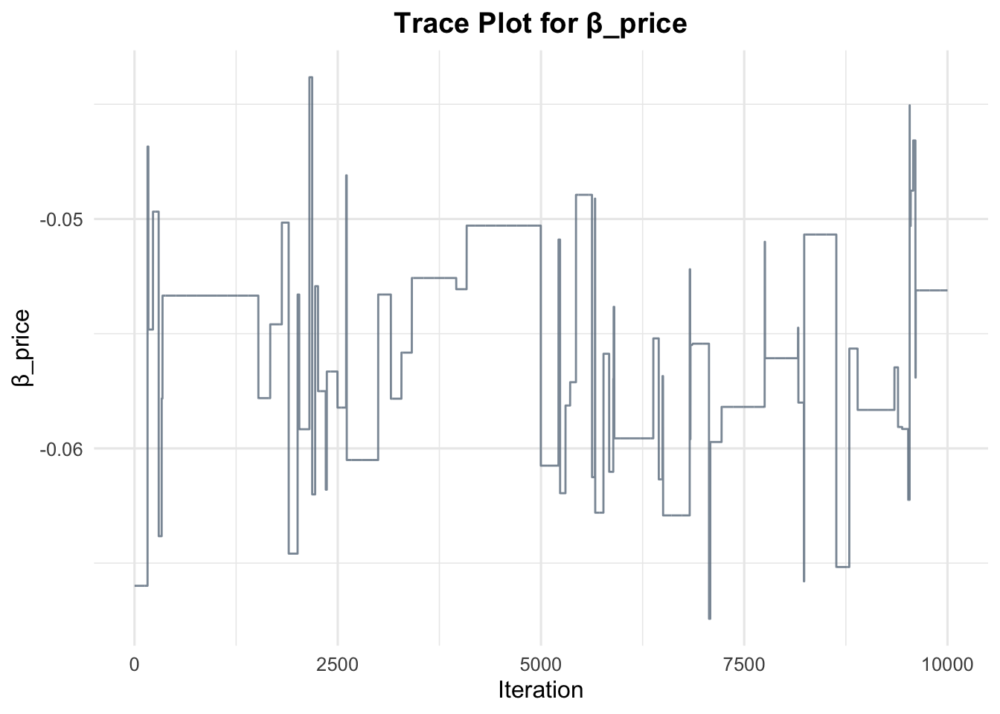
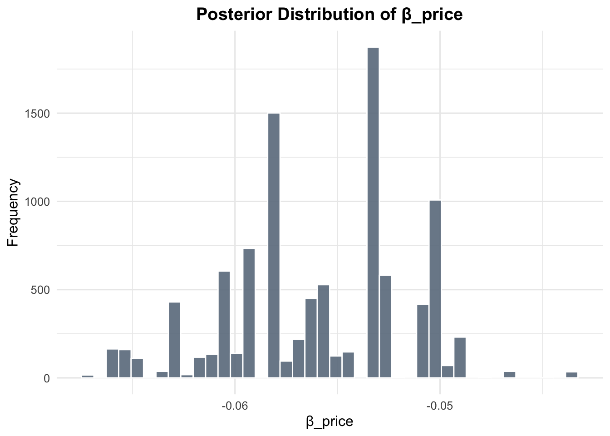

# set seed for reproducibility
set.seed(123)
# define attributes
brand <- c("N", "P", "H") # Netflix, Prime, Hulu
ad <- c("Yes", "No")
price <- seq(8, 32, by=4)
# generate all possible profiles
profiles <- expand.grid(
brand = brand,
ad = ad,
price = price
)
m <- nrow(profiles)
# assign part-worth utilities (true parameters)
b_util <- c(N = 1.0, P = 0.5, H = 0)
a_util <- c(Yes = -0.8, No = 0.0)
p_util <- function(p) -0.1 * p
# number of respondents, choice tasks, and alternatives per task
n_peeps <- 100
n_tasks <- 10
n_alts <- 3
# function to simulate one respondent’s data
sim_one <- function(id) {
datlist <- list()
# loop over choice tasks
for (t in 1:n_tasks) {
# randomly sample 3 alts (better practice would be to use a design)
dat <- cbind(resp=id, task=t, profiles[sample(m, size=n_alts), ])
# compute deterministic portion of utility
dat$v <- b_util[dat$brand] + a_util[dat$ad] + p_util(dat$price) |> round(10)
# add Gumbel noise (Type I extreme value)
dat$e <- -log(-log(runif(n_alts)))
dat$u <- dat$v + dat$e
# identify chosen alternative
dat$choice <- as.integer(dat$u == max(dat$u))
# store task
datlist[[t]] <- dat
}
# combine all tasks for one respondent
do.call(rbind, datlist)
}
# simulate data for all respondents
conjoint_data <- do.call(rbind, lapply(1:n_peeps, sim_one))
# remove values unobservable to the researcher
conjoint_data <- conjoint_data[ , c("resp", "task", "brand", "ad", "price", "choice")]
# clean up
rm(list=setdiff(ls(), "conjoint_data"))Multinomial Logit Model
This assignment explores two methods for estimating the MNL model: (1) via Maximum Likelihood, and (2) via a Bayesian approach using a Metropolis-Hastings MCMC algorithm.
1. Likelihood for the Multi-nomial Logit (MNL) Model
Suppose we have \(i=1,\ldots,n\) consumers who each select exactly one product \(j\) from a set of \(J\) products. The outcome variable is the identity of the product chosen \(y_i \in \{1, \ldots, J\}\) or equivalently a vector of \(J-1\) zeros and \(1\) one, where the \(1\) indicates the selected product. For example, if the third product was chosen out of 3 products, then either \(y=3\) or \(y=(0,0,1)\) depending on how we want to represent it. Suppose also that we have a vector of data on each product \(x_j\) (eg, brand, price, etc.).
We model the consumer’s decision as the selection of the product that provides the most utility, and we’ll specify the utility function as a linear function of the product characteristics:
\[ U_{ij} = x_j'\beta + \epsilon_{ij} \]
where \(\epsilon_{ij}\) is an i.i.d. extreme value error term.
The choice of the i.i.d. extreme value error term leads to a closed-form expression for the probability that consumer \(i\) chooses product \(j\):
\[ \mathbb{P}_i(j) = \frac{e^{x_j'\beta}}{\sum_{k=1}^Je^{x_k'\beta}} \]
For example, if there are 3 products, the probability that consumer \(i\) chooses product 3 is:
\[ \mathbb{P}_i(3) = \frac{e^{x_3'\beta}}{e^{x_1'\beta} + e^{x_2'\beta} + e^{x_3'\beta}} \]
A clever way to write the individual likelihood function for consumer \(i\) is the product of the \(J\) probabilities, each raised to the power of an indicator variable (\(\delta_{ij}\)) that indicates the chosen product:
\[ L_i(\beta) = \prod_{j=1}^J \mathbb{P}_i(j)^{\delta_{ij}} = \mathbb{P}_i(1)^{\delta_{i1}} \times \ldots \times \mathbb{P}_i(J)^{\delta_{iJ}}\]
Notice that if the consumer selected product \(j=3\), then \(\delta_{i3}=1\) while \(\delta_{i1}=\delta_{i2}=0\) and the likelihood is:
\[ L_i(\beta) = \mathbb{P}_i(1)^0 \times \mathbb{P}_i(2)^0 \times \mathbb{P}_i(3)^1 = \mathbb{P}_i(3) = \frac{e^{x_3'\beta}}{\sum_{k=1}^3e^{x_k'\beta}} \]
The joint likelihood (across all consumers) is the product of the \(n\) individual likelihoods:
\[ L_n(\beta) = \prod_{i=1}^n L_i(\beta) = \prod_{i=1}^n \prod_{j=1}^J \mathbb{P}_i(j)^{\delta_{ij}} \]
And the joint log-likelihood function is:
\[ \ell_n(\beta) = \sum_{i=1}^n \sum_{j=1}^J \delta_{ij} \log(\mathbb{P}_i(j)) \]
2. Simulate Conjoint Data
We will simulate data from a conjoint experiment about video content streaming services. We elect to simulate 100 respondents, each completing 10 choice tasks, where they choose from three alternatives per task. For simplicity, there is not a “no choice” option; each simulated respondent must select one of the 3 alternatives.
Each alternative is a hypothetical streaming offer consistent of three attributes: (1) brand is either Netflix, Amazon Prime, or Hulu; (2) ads can either be part of the experience, or it can be ad-free, and (3) price per month ranges from $4 to $32 in increments of $4.
The part-worths (ie, preference weights or beta parameters) for the attribute levels will be 1.0 for Netflix, 0.5 for Amazon Prime (with 0 for Hulu as the reference brand); -0.8 for included adverstisements (0 for ad-free); and -0.1*price so that utility to consumer \(i\) for hypothethical streaming service \(j\) is
\[ u_{ij} = (1 \times Netflix_j) + (0.5 \times Prime_j) + (-0.8*Ads_j) - 0.1\times Price_j + \varepsilon_{ij} \]
where the variables are binary indicators and \(\varepsilon\) is Type 1 Extreme Value (ie, Gumble) distributed.
The following code provides the simulation of the conjoint data.
Note
3. Preparing the Data for Estimation
The “hard part” of the MNL likelihood function is organizing the data, as we need to keep track of 3 dimensions (consumer \(i\), covariate \(k\), and product \(j\)) instead of the typical 2 dimensions for cross-sectional regression models (consumer \(i\) and covariate \(k\)). The fact that each task for each respondent has the same number of alternatives (3) helps. In addition, we need to convert the categorical variables for brand and ads into binary variables.
Data Preparation
# Show summary using kable
library(knitr)
summary_table <- summary(df_raw)
kable(as.data.frame(summary_table), caption = "Summary of Cleaned Data")| Var1 | Var2 | Freq |
|---|---|---|
| resp | Min. : 1.00 | |
| resp | 1st Qu.: 25.75 | |
| resp | Median : 50.50 | |
| resp | Mean : 50.50 | |
| resp | 3rd Qu.: 75.25 | |
| resp | Max. :100.00 | |
| task | Min. : 1.0 | |
| task | 1st Qu.: 3.0 | |
| task | Median : 5.5 | |
| task | Mean : 5.5 | |
| task | 3rd Qu.: 8.0 | |
| task | Max. :10.0 | |
| choice | Min. :0.0000 | |
| choice | 1st Qu.:0.0000 | |
| choice | Median :0.0000 | |
| choice | Mean :0.3333 | |
| choice | 3rd Qu.:1.0000 | |
| choice | Max. :1.0000 | |
| brand | H: 971 | |
| brand | N:1016 | |
| brand | P:1013 | |
| brand | NA | |
| brand | NA | |
| brand | NA | |
| ad | No :1545 | |
| ad | Yes:1455 | |
| ad | NA | |
| ad | NA | |
| ad | NA | |
| ad | NA | |
| price | Min. : 8.00 | |
| price | 1st Qu.:12.00 | |
| price | Median :20.00 | |
| price | Mean :19.96 | |
| price | 3rd Qu.:28.00 | |
| price | Max. :32.00 |
4. Estimation via Maximum Likelihood
Prepare data and define log-likelihood function
# Convert categorical variables to numeric if needed
df_clogit <- df_raw %>%
mutate(
brand_num = as.numeric(brand),
ad_num = as.numeric(ad)
)
# Log-likelihood function for conditional logit model
log_likelihood_clogit <- function(beta, data) {
# Compute utility: V_ij = X_ij * beta
utilities <- beta[1] * data$brand_num +
beta[2] * data$ad_num +
beta[3] * data$price
# Get unique task IDs (choice sets)
tasks <- unique(data$task)
log_lik <- 0
for (t in tasks) {
subset <- data[data$task == t, ]
V <- utilities[data$task == t]
# Get utility of chosen alternative
chosen <- subset$choice == 1
V_chosen <- V[chosen]
# Calculate log-likelihood contribution
log_lik <- log_lik + V_chosen - log(sum(exp(V)))
}
return(-log_lik) # Return negative log-likelihood for minimization
}Estimate MLEs using safe vectorized log-likelihood
library(tidyverse)
library(knitr)
library(MASS)
Attaching package: 'MASS'The following object is masked from 'package:dplyr':
selectEstimate MLEs using safe vectorized log-likelihood
# Step 1: Ensure choice is numeric
df_raw <- df_raw %>%
mutate(choice = as.numeric(choice))
# Step 2: Create model matrix (drop intercept)
X <- model.matrix(~ brand + ad + price, data = df_raw)[, -1]
# Step 3: Store target vector and task IDs
y <- df_raw$choice
task <- df_raw$task
# Step 4: Define a valid log-likelihood function that returns a scalar
log_likelihood_mle <- function(beta) {
utility <- as.vector(X %*% beta)
df_util <- data.frame(
task = task,
utility = utility,
choice = y
)
loglik_vector <- df_util %>%
group_by(task) %>%
mutate(
exp_u = exp(utility),
denom = sum(exp_u),
p = exp_u / denom
) %>%
filter(choice == 1) %>%
pull(p) %>%
log()
total_loglik <- sum(loglik_vector)
return(-total_loglik) # scalar for optim()
}
# Step 5: Estimate via optim
mle_result <- optim(
par = rep(0, ncol(X)),
fn = log_likelihood_mle,
hessian = TRUE,
method = "BFGS"
)
# Step 6: Extract estimates and compute SEs
estimates <- mle_result$par
hessian <- mle_result$hessian
se <- if (det(hessian) != 0) {
sqrt(diag(solve(hessian)))
} else {
sqrt(diag(ginv(hessian)))
}
# Step 7: Compute 95% CIs
lower <- estimates - 1.96 * se
upper <- estimates + 1.96 * se
# Step 8: Output summary table
mle_summary <- data.frame(
Parameter = colnames(X),
Estimate = round(estimates, 4),
Std_Error = round(se, 4),
CI_Lower = round(lower, 4),
CI_Upper = round(upper, 4)
)
kable(mle_summary, caption = "Vectorized MLEs and 95% Confidence Intervals")| Parameter | Estimate | Std_Error | CI_Lower | CI_Upper |
|---|---|---|---|---|
| brandN | 0.5310 | 0.0813 | 0.3716 | 0.6903 |
| brandP | 0.3117 | 0.0845 | 0.1460 | 0.4774 |
| adYes | -0.4442 | 0.0652 | -0.5721 | -0.3163 |
| price | -0.0556 | 0.0042 | -0.0639 | -0.0474 |
5. Estimation via Bayesian Methods
Run Metropolis-Hastings MCMC Sampler (11,000 steps)
library(tidyverse)
library(knitr)
library(MASS)
set.seed(123) # For reproducibility
# Step 1: Ensure `choice` is numeric
df_raw <- df_raw %>% mutate(choice = as.numeric(choice))
# Step 2: Create design matrix (drop intercept)
X <- model.matrix(~ brand + ad + price, data = df_raw)[, -1]
y <- df_raw$choice
task <- df_raw$task
# Step 3: Log-prior using N(0,5) for binary variables, N(0,1) for price
log_prior <- function(beta) {
dnorm(beta[1], 0, 5, log = TRUE) + # beta_netflix
dnorm(beta[2], 0, 5, log = TRUE) + # beta_prime
dnorm(beta[3], 0, 5, log = TRUE) + # beta_ad
dnorm(beta[4], 0, 1, log = TRUE) # beta_price
}
# Step 4: Log-likelihood (same as MLE version, reused)
log_likelihood <- function(beta) {
utility <- as.vector(X %*% beta)
df_util <- data.frame(task = task, utility = utility, choice = y)
loglik_vector <- df_util %>%
group_by(task) %>%
mutate(
exp_u = exp(utility),
denom = sum(exp_u),
p = exp_u / denom
) %>%
filter(choice == 1) %>%
pull(p) %>%
log()
return(sum(loglik_vector)) # return total log-likelihood
}
# Step 5: Log-posterior
log_posterior <- function(beta) {
log_likelihood(beta) + log_prior(beta)
}
# Step 6: Metropolis-Hastings Sampler (11,000 steps, diagonal proposal)
run_mh_sampler <- function(start, n_iter) {
n_params <- length(start)
samples <- matrix(NA, nrow = n_iter, ncol = n_params)
current <- start
current_logpost <- log_posterior(current)
# Proposal SDs: N(0, 0.05) for first 3, N(0, 0.005) for price
proposal_sd <- c(sqrt(0.05), sqrt(0.05), sqrt(0.05), sqrt(0.005))
for (i in 1:n_iter) {
proposal <- current + rnorm(n_params, mean = 0, sd = proposal_sd)
proposal_logpost <- log_posterior(proposal)
log_accept_ratio <- proposal_logpost - current_logpost
if (log(runif(1)) < log_accept_ratio) {
current <- proposal
current_logpost <- proposal_logpost
}
samples[i, ] <- current
}
colnames(samples) <- colnames(X)
return(samples)
}
# Step 7: Run sampler and discard burn-in
mh_samples <- run_mh_sampler(start = rep(0, 4), n_iter = 11000)
mh_posterior <- mh_samples[1001:11000, ]
# Step 8: Summarize posterior
mh_summary <- as.data.frame(mh_posterior) %>%
summarise(across(everything(), list(
mean = ~round(mean(.), 4),
sd = ~round(sd(.), 4),
lower = ~round(quantile(., 0.025), 4),
upper = ~round(quantile(., 0.975), 4)
), .names = "{.col}_{.fn}"))
kable(t(mh_summary), caption = "Posterior Means, SDs, and 95% Credible Intervals")| brandN_mean | 0.5338 |
| brandN_sd | 0.0665 |
| brandN_lower | 0.4096 |
| brandN_upper | 0.6993 |
| brandP_mean | 0.3400 |
| brandP_sd | 0.0879 |
| brandP_lower | 0.1638 |
| brandP_upper | 0.4551 |
| adYes_mean | -0.4521 |
| adYes_sd | 0.0570 |
| adYes_lower | -0.5589 |
| adYes_upper | -0.3222 |
| price_mean | -0.0560 |
| price_sd | 0.0044 |
| price_lower | -0.0652 |
| price_upper | -0.0489 |
Trace plot and histogram for β_price
library(ggplot2)
# Extract β_price samples
beta_price_draws <- mh_posterior[, 4]
draw_ids <- 1:length(beta_price_draws)
# Trace plot
trace_plot <- ggplot(data.frame(iter = draw_ids, value = beta_price_draws),
aes(x = iter, y = value)) +
geom_line(color = "#6A7B8C", alpha = 0.8) +
labs(title = "Trace Plot for β_price", x = "Iteration", y = "β_price") +
theme_minimal(base_size = 12) +
theme(
plot.title = element_text(hjust = 0.5, face = "bold") # centered, bold
)
# Histogram
hist_plot <- ggplot(data.frame(value = beta_price_draws), aes(x = value)) +
geom_histogram(bins = 40, fill = "#6A7B8C", color = "white", alpha = 0.9) +
labs(title = "Posterior Distribution of β_price", x = "β_price", y = "Frequency") +
theme_minimal(base_size = 12) +
theme(
plot.title = element_text(hjust = 0.5, face = "bold") # centered, bold
)
# Print both plots separately
print(trace_plot)
Trace plot and histogram for β_price
print(hist_plot)
Compare MCMC Posterior to MLE Estimates
# Create tidy MCMC summary
mcmc_summary <- as.data.frame(mh_posterior) %>%
summarise(across(everything(), list(
mean = ~mean(.),
sd = ~sd(.),
lower = ~quantile(., 0.025),
upper = ~quantile(., 0.975)
))) %>%
pivot_longer(cols = everything(),
names_to = c("Parameter", ".value"),
names_sep = "_")
# Assume you already have these from MLE block
mle_summary_df <- data.frame(
Parameter = colnames(X),
MLE_Estimate = estimates,
MLE_SE = se,
MLE_Lower = estimates - 1.96 * se,
MLE_Upper = estimates + 1.96 * se
)
# Combine summaries for comparison
comparison_df <- mcmc_summary %>%
left_join(mle_summary_df, by = "Parameter") %>%
mutate(across(where(is.numeric), round, 4))
# Display combined table
library(knitr)
kable(comparison_df,
caption = "Comparison of MCMC Posterior and MLE Estimates",
col.names = c("Parameter", "Posterior Mean", "Posterior SD",
"95% CI Lower", "95% CI Upper",
"MLE Estimate", "MLE SE",
"MLE 95% CI Lower", "MLE 95% CI Upper"))| Parameter | Posterior Mean | Posterior SD | 95% CI Lower | 95% CI Upper | MLE Estimate | MLE SE | MLE 95% CI Lower | MLE 95% CI Upper |
|---|---|---|---|---|---|---|---|---|
| brandN | 0.5338 | 0.0665 | 0.4096 | 0.6993 | 0.5310 | 0.0813 | 0.3716 | 0.6903 |
| brandP | 0.3400 | 0.0879 | 0.1638 | 0.4551 | 0.3117 | 0.0845 | 0.1460 | 0.4774 |
| adYes | -0.4521 | 0.0570 | -0.5589 | -0.3222 | -0.4442 | 0.0652 | -0.5721 | -0.3163 |
| price | -0.0560 | 0.0044 | -0.0652 | -0.0489 | -0.0556 | 0.0042 | -0.0639 | -0.0474 |
6. Discussion
Interpretation of Parameter Estimates
Assuming the data reflect real consumer choices (not simulation), the estimated parameters are meaningful:
\(\beta_\text{Netflix} > \beta_\text{Prime}\)
→ Consumers prefer Netflix over Prime, holding all else constant. This means Netflix contributes more to utility than Prime does.\(\beta_\text{price} < 0\)
→ A negative coefficient for price is expected: as price increases, the probability of a subscription being chosen decreases — consistent with economic theory and downward-sloping demand.
Together, these suggest the model captures real consumer preferences for brand and sensitivity to price. The direction and relative size of the coefficients align with rational behavior.
Extending to a Multi-Level (Hierarchical) Logit Model
To simulate data from — and estimate parameters of — a multi-level (random parameter) model, we would need to:
1. Introduce respondent-level heterogeneity
Rather than assuming that all individuals share the same set of coefficients \(\boldsymbol{\beta}\), we allow each respondent \(i\) to have their own \(\boldsymbol{\beta}_i\). These are drawn from a population-level distribution:
\[ \boldsymbol{\beta}_i \sim \mathcal{N}(\boldsymbol{\mu}, \boldsymbol{\Sigma}) \]
Here, \(\boldsymbol{\mu}\) is the average effect across respondents, and \(\boldsymbol{\Sigma}\) captures the variability in preferences.
2. Modify the data generation process
Instead of applying one \(\boldsymbol{\beta}\) to all choice tasks, you would: - Sample a unique \(\boldsymbol{\beta}_i\) for each respondent - Use that \(\boldsymbol{\beta}_i\) to generate utilities and choices for their tasks
3. Use hierarchical Bayesian estimation
To estimate this model, you typically: - Place priors on both \(\boldsymbol{\mu}\) and \(\boldsymbol{\Sigma}\) - Use Gibbs sampling or Hamiltonian Monte Carlo (HMC) to draw from the full joint posterior - Software like Stan, PyMC, or JAGS is often used for this
Why it matters:
This hierarchical approach is essential in real-world conjoint analysis because it: - Accounts for individual differences in preferences - Provides more accurate predictions at the individual level - Prevents misleading inferences from population-averaged models